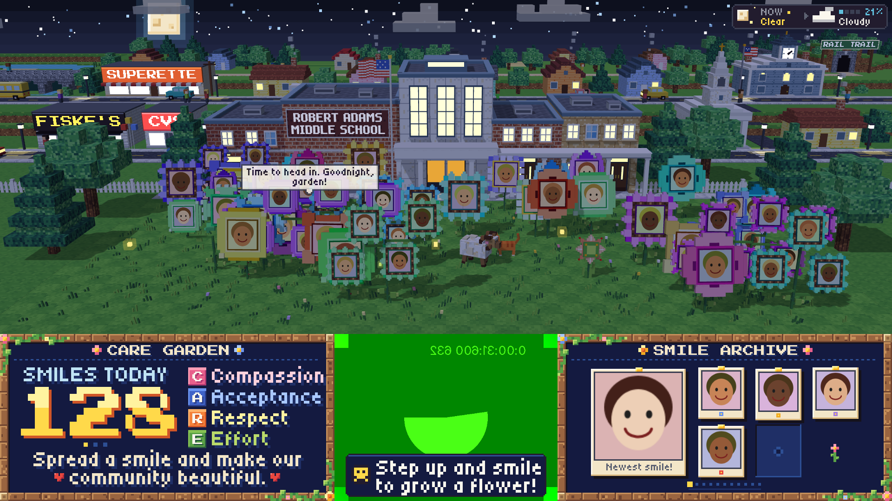

Projects
Featured
MS Code Lab
seven-course computer science platform for grades 6 to 8
Curriclio
full-stack curriculum management platform for districts
Heartbeat
school communication and operations hub
Bass Lake
2D multiplayer game, p5.js + Supabase
HAB Dashboard
algal bloom prediction model, for student inquiry
Satellite Visualizer
real-time orbital tracker, 3D visualization
Neural Network Explainer
interactive walkthrough of how neural networks work
Care Garden
interactive p5.js installation for the school lobby
MS Code Lab
A classroom system I designed and built to improve information flow and student comprehension, with scaffolded instruction that meets every learner. Seven courses share one teacher account and one set of teacher tools.
MS Code Lab
the platform: courses, gradebook, help queue, class screen
Pixel Trail
game programming in JavaScript with p5.js, grades 7 to 8
Maker Lab
circuits, sensors and code on the micro:bit, grades 6 to 7
Cipher City
cybersecurity by writing code, grades 6 to 8
Block Quest
a first course in block coding, grade 6
AppVenture
building phone apps with a partner, grade 7
RoboCode Academy
programming a robot in C++, grades 7 to 8
Packet Express
how networks and the internet work, grades 6 to 8
Student tools
Guess That Teacher
community web game
PC Builder
what's in a computer
Computer Parts Quest
3D webquest of computer components
Drone Designer
how airframes affect flight
Satellite Visualizer
live tracker and history of satellites
HAB Dashboard
algal bloom predictor for the Charles River
Meet the Robots
3D robot webquest with Three.js builder
Neural Network Explainer
interactive walkthrough of how neural networks work
School tools
Teaching
Workshop
Other
Featured
Care Garden
An interactive installation in the school lobby. Built in p5.js.


An interactive installation built for our PBIS Care Week. Students smile at a webcam in the lobby, and each smile grows a flower in a shared garden on a large screen. Thousands of flowers grew over the week.
Built in p5.js. The garden is drawn as pixel art, with a day and night cycle, weather, and characters from the school. The current installation runs from a local server with richer data and display options than the original sketch.